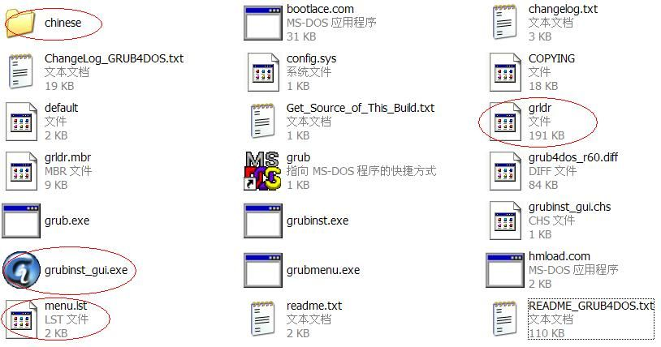
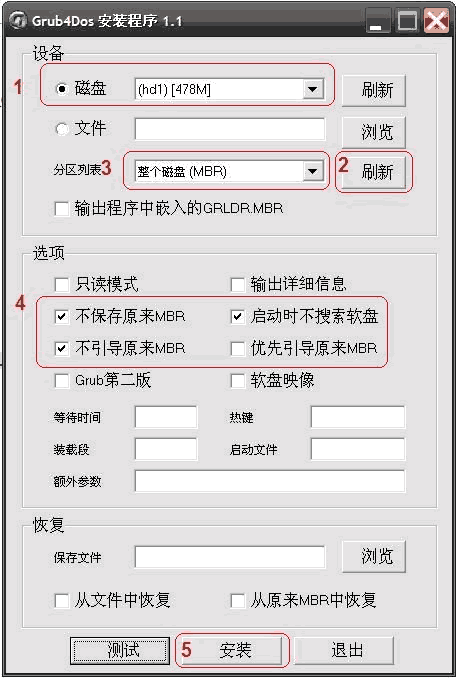
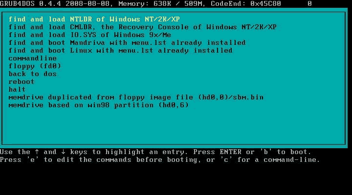

Usboot可以将U盘格式化为HDD格式，主要是将MBR变为硬盘的格式，之后对U盘改变文件系统的格式化一般不会改变MBR。
变为硬盘的MBR后就可以安装GRUB了。GRUB可以引导DOS、LINUX、WIN XP、VISTA、WIN7等众多系统。为打造U盘版的多系统提供了便利。
Grub4Dos比GNU的GRUB更灵活了一些，所以这里用了Grub4Dos。
安装GRUB可以用grubinst，其中grubinst_gui.exe是图形化安将工具。下图是将grub和grubinst放到一起后的文件。

双击grubinst_gui.exe，得到下面的对话框，安装1，2，3，4，5顺序即可安装grub到u盘的mbr。注意选择u盘不要选错了硬盘，看容量很容易能看出来。
WIN7中要以管理员身份运行，要不可能找不到U盘。

然后把grldr，menu.lst和fonts.gz文件复制到u盘根目录。（如果你需要中文菜单，记住要复制chinese文件夹里的grldr文件。) 这样grub4dos的u盘引导部分就做好的，现在这个u盘可以引导电脑启动了。启动后的界面看下边截图。你会注意到菜单还是英文的，这是因为menu.lst里还没有加载中文字体。同时你看到很多启动项目，其实它们没有一个能启动，因为这个menu.lst仅仅是个样板而已。
